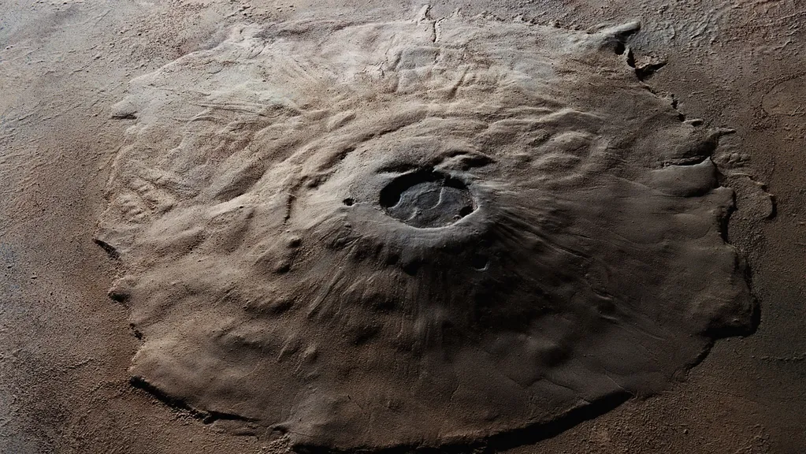
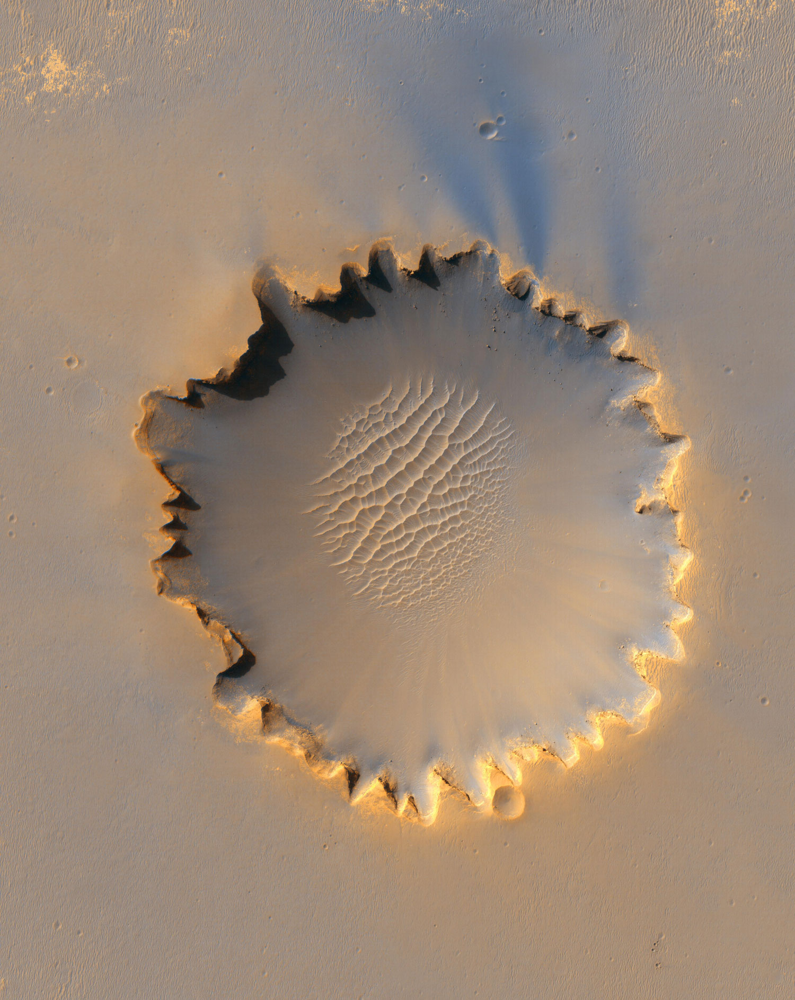

Prochaine destination : mars
Mars est la planète la plus proche de la terre, elle est souvent connue sous le surnom : "la planète rouge" à cause de son sol oxydé qui a une couleur rougeâtre. Cette planète a une géante montagne appelée l'ont Olympus et plusieurs gros cratères, notamment le cratère victoria a Cape-Verde. Cette planète est une des plus explorées du système solaire, et le seul qu'on a envoyé des robots pour aller visité. Cette planète était plus comme la terre avant, elle avait une atmosphère plus épaisse, et donc, elle était plus chaude et humide. Le nom de cette planète vient des Romains, ils l'ont nommé après leur dieu de la guerre : Mars à cause de sa couleur rouge, comme le sang.
L'olympus mons
Le volcan Olympus mons sur mar est un des plus haut somet su system solaire, à la base du volcan, il y a même un escarpement similaire à ceux que l’on trouve sur les îles volcaniques terrestres, comme Hawaï et les Açores

Le cratère Victoria
Le cratère victoria est un cratère d'un diamètre de 800 metres, ce cratère est ou ce trouve le rover opportunity.

Le rover opportunity
Le robot opportunity est arrivé sur mars dans le cratère Victoria. Le but du robot est de trouvé et annalizé plusieur type de roche pour faire de la recherche sur l'activité du l'eau dans le passé de mars.

Les nouriture que j'aimerais manger sur mars
- Le fer oxidé
- Les roches du cratère victoria
- Des panaux solaire